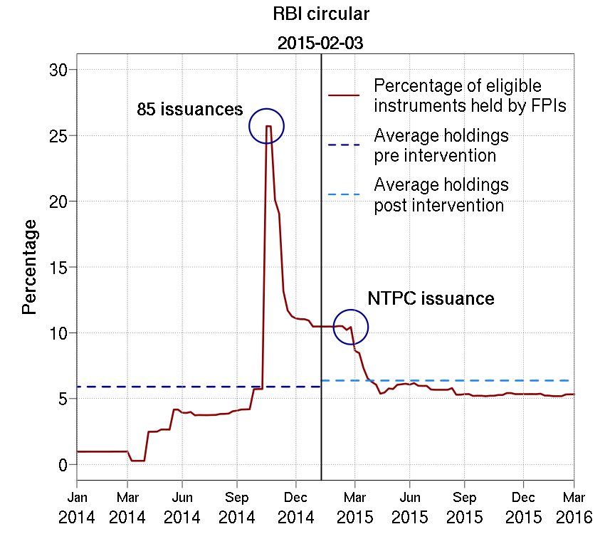

A good policymaking process requires significant regulatory capacity. Before the policy is enacted, the State must (a) identify a market failure and an appropriate intervention to address it, (b) conduct a cost benefit analyis of the intervention, and (c) conduct an effective public consultation where the public knows about (a) and (b). Even after the policy is enacted, the policy, by itself, is merely an 'output'. After allowing for a reasonable lag for transmission, the State must identify whether the intended outcome of the policy has been achieved. For example, the intended outcome of the Insolvency and Bankruptcy Code (IBC) is to improve debt recovery rate in India. The IBC was enacted in May 2016 and most of its provisions were notified in November 2016. The IBC is an output. Allowing a medium term horizon to allow the impact to play out, an impact assessment exercise will be due in May 2020 to assess whether the recovery rates have improved since the notification of the provisions of the IBC. The impact on debt recovery rates would be the outcome. The effectiveness of IBC must be measured with reference to this outcome.
In the field of capital controls in India, we find that State interventions are almost never accompanied with the steps mentioned above (Burman and Zaveri (2016)). An ex-post impact assessment of interventions in this field, is unheard of. In this article, we conduct an ex-post impact assessment of an intervention in the field of capital controls.
On 3rd February, 2015, RBI prohibited FPIs from investing in (a) debt instruments with a maturity period of less than three years (such as corporate bonds with less than 3 years maturity and commercial papers), and (b) money market and liquid mutual fund schemes (as these schemes invested in corporate debt with less than 3 years maturity). In this article, for ease of reading, we call (a) the debt instruments with a maturity period of less than three years, "prohibited instruments"; and (b) the debt instruments with a maturity period of atleast three years, "eligible instruments". The restriction was effective from 4th February, 2015. However, FPIs were allowed to continue holding the prohibited instruments that they already held on 4th February, 2015. Also, no lock in period was imposed on the eligible instruments acquired by FPIs, that is, FPIs could invest in and sell bonds with a maturity period of atleast three years, well before they matured.
The RBI circular did not specify what the market failure was or what the intervention was intended to achieve, except that the intervention was to bring consistency between the rules for FPI investment in corporate bonds at par with FPI investment in Government securities. It was not accompanied with a cost benefit analysis of the intervention, and it was not preceded by a public consultation process. We are not aware if RBI or the Central Government propose to undertake an ex-post impact assessment of this measure. In this article, we analyse what the intervention has achieved, more than a year after it was imposed.
Due to the absence of a specific desired outcome in the RBI circular, we relied on statements made by RBI to the press. These statements as well as our conversations with RBI employees on public forums since the intervention, indicate that the intervention was intended to 'nudge' FPI investment in long-term debt in India. Our analysis is, therefore, limited to the following questions:
Table 1 gives an overview of the size of the corporate debt market in India. Except for data on commercial paper (CP) issuances, data on the tenor of the debt instruments is not readily available in public domain. Hence, we use the size of the CP market as a proxy for the size of the short term debt market in India. The actual size of the short-term debt market would be larger. Table 1 shows that that CP issuances alone account for atleast 30% of the overall debt market in India.
| (Rs. billion) | ||
|---|---|---|
| Total size | CPs | |
| 2014-15 | 6026.38 | 1887.88 |
| (31.33%) | ||
| 2015-16 | 7515.46 | 2596.61 |
| (34.55%) | ||
| Source: SEBI Annual Report (2015-16) | ||
We use the daily holdings data from NSDL to identify the debt instruments held by FPIs from January 2014 until March 2016. We then identify the tenor of the debt instruments by using the issue and expiry dates of each debt instrument held by each FPI during this period. With this data, we identify the change between (a) the percentage of eligible instruments held by FPIs during 12 months before the intervention; and (b) the percentage of eligible instruments during 14 months after the intervention. We take a long time-frame for the study. This helps filtering out the effect of other macroeconomic conditions and monetary policy changes that could have caused short term fluctuations in FPI participation in the Indian corporate debt market.
The percentage of eligible instruments held by FPIs during the study period is shown in Fig. 1. The vertical line on 3rd February, 2015 is the date of the intervention. In the year immediately preceding the intervention, that is, from January 2014-January 2015, FPIs, on an average, held 5.9% of the total eligible instruments issued by Indian issuers. For the period of one year after the ban, that is, from March 2015-April 2016, the corresponding average was 6.37%. Thus, there was a nominal increase of 0.47% in the holding of eligible instruments by FPIs after the intervention.
On 25th March, 2015, NTPC had issued eligible instruments to the tune of Rs. 10,306 crores, the largest ever issuance in terms of size by any private or public sector firm in India. We find that if we exclude the effect of the NTPC issuance, the nominal increase of 0.47% also disappears and the average eligible instruments held by FPIs after the intervention would have fallen by 5.1%.
From anecdotal conversations with market participants, we know that FPIs do not hold their local currency debt until maturity, especially where such debt is of a long-term nature. We notice this finding even in our data, as explained below.
In November 2014, we see a steep incline in the percentage of eligible instruments held by FPIs in Fig.1. This is because of 85 new issuances of long term debt instruments between 6th November and 12th November, in which FPIs participated vigorously. At this time, FPIs end up holding almost 26% of the outstanding eligible instruments. Thereafter, there is a steep fall almost immediately to 11%. Even after the intervention, we see a similar trend. Fig. 1 shows that for one month after the prohibition was imposed, the proportion of outstanding long term corporate bonds held by FPIs remains constant at about 11%. Thereafter, beginning sometime in March 2015 and continuing until the end of April 2015, the proportion of outstanding long term bonds held by FPIs drops from 11% to 6%. On 25th March, 2015, NTPC had issued long term debt instruments to the tune of Rs. 10,306 crores, the largest ever issuance in terms of size by any private or public sector firm. Hence, we see a small spike in the proportion of outstanding eligible instruments held by FPIs at that time. However, just like the November 2014 decline, the spike dissipates almost immediately.
The steep decline after the spike in November 2014 and in March 2015 may be due to two reasons: (a) FPIs may be redeeming bonds that have matured in November 2014 and March 2015 respectively; and/ or (b) FPIs may be selling bonds that they acquired in the spike immediately preceding the drop. To ascertain which of the two reasons led to the drop, we control for (a) the 85 issuances in November 2014; and (b) the NTPC issuance in March 2015, and re-plot the graph in Fig. 2. We observe that if we were to exclude the 85 issuances responsible for the spike in November 2014 and the NTPC issuance in March 2015, the proportion of FPI holdings of eligible instruments is nearly constant between 1% and 5%. In other words, there is no drop if there is no spike. This implies that the drop in November 2014 and March 2015 in Fig.1 can be attributed to the sale of long term corporate bonds by the FPIs.
Thus, using two instances - one before the intervention and another after the intervention - we show that the behaviour of FPIs has remained the same pre and post the intervention. FPIs continue to flip their long term holdings, selling them almost immediately within 1 month of having bought them, and hold only a minute proportion of the total long term corporate bonds issued.
|
|
|
|  |
An ex-post impact measurement exercise measures whether an intervention has achieved the intended outcome. It helps analyse whether any changes must be made to the intervention or the manner of its implementation to make it more effective. For example, if an ex-post impact assessment of the IBC in 2020 shows that there has been no improvement in the debt recovery rates in India, it should be a sufficient ground to re-visit the design of the law. It is to facilitate such an exercise that the Indian Financial Code drafted by the Justice Srikrishna-led Financial Sector Legislative Reforms Commission, requires every regulation to be reviwed three years after its enactment.
Our ex-post impact analysis of the intervention of restricting FPI investment in corporate debt with a maturity period of less than three years, finds no evidence of having achieved its intended outcome of channelising foreign capital from the short to long end of the corporate bond market. As shown above, neither do FPIs increase their participation in long term bond holdings as a result of the intervention nor do they alter their behaviour by holding the long term corporate debt securities until maturity.
We find that an attempt to centrally plan the allocation of foreign capital inflows, did not have the intended effect on atleast one occasion. On the other hand, the intervention withdrew foreign capital from the most liquid part of the Indian debt market. Pandey and Zaveri (2016) show that a substantial proportion of the bond issuances in similarly placed economies, such as Indonesia and South Korea, belong to the maturity bracket of one-three years. None of these economies prohibit foreign portfolio investment in local currency debt of this maturity bracket. In India too, before the intervention, there was significant FPI interest in the bond market with a maturity profile of less than three years. This is evident from the rapid utilisation of the debt limits for CPs. The reason for this is simple. It is easier to price currency and credit risk in debt of this maturity profile. For small to mid-sized Indian companies which are not known to foreign investors, it is easier to raise debt in this maturity profile from foreign investors. Globally, being able to raise foreign debt in local currency is a boon for debtors, as the currency risk is taken by the foreign investor. At a time when India is struggling to set up its corporate bond market, the intervention has resulted in depriving the relatively more liquid part of the market of significant participation.
Regulatory Responsiveness in India: A normative and empirical framework for assessment, Anirudh Burman and Bhargavi Zaveri. IGIDR Working Paper IGIDR Working Paper WP-2016-025, October 2016.
Radhika Pandey and Bhargavi Zaveri, Time to inflate economy's spare tyre, Business Standard, 18th April, 2016.